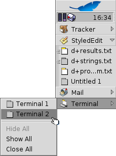

The Deskbar is the little panel that by default is located in the upper right corner of the screen. It's Haiku's version of Windows' taskbar with its Start button. It contains the Deskbar menu from where you can start applications and preferences, a tray with a clock and other tools below that and a list of currently running programs at the bottom.

You can move the Deskbar to any corner or as a bar along the upper or lower border of the screen by gripping the knobbly area on the left side of the tray and drag&drop it into the new position. You can also fold it into a more compact layout by drag&dropping the knobbly area onto the Deskbar menu.
The Deskbar Menu
A menu opens when you click on the Deskbar's uppermost part:

- About This System... - Shows some basic information of the system, licenses and the credits of the Haiku project.
- Find... - Opens the query dialog.
- Show Replicants - Shows/hides the little Replicant widget you use to drag it around, remove or access its context menu.
- Deskbar Settings
- Configure Deskbar Menu... - Opens a panel to configure the Deskbar menu (see below).
- Always on Top - The Deskbar always stays above all other windows.
- Auto Raise - The Deskbar pops to the front if the mouse pointer touches it.
- Sort Running Applications - Sorts the list of running programs alphabetically.
- Tracker always First - Even if you sort alphabetically, the Tracker entry always stays first in the list.
- 24 Hour Clock - Toggles between 24 and 12 hour clock.
- Show Seconds - Adds the display of seconds to the clock.
- European Date - Shows the date in European format: day-month-year
- ---- Full Date ----
- Show Application Expander - Provides a small widget to show/hide all windows of a program directly under its entry in the Deskbar.
- Expand New Applications - Newly launched programs have their windows automatically expanded under their entry in the Deskbar.
- Restart - Restarts the system.
- Shutdown - Shuts down the system.
- Recent Documents, Folders, Applications - List the last recently opened documents, folders and applications (see Configure Deskbar Menu... below).
- Applications, Demos, Deskbar Applets, Preferences - List of installed applications, demos, applets and preferences (see Configure Deskbar Menu... below).
Configure Deskbar Menu...

In this panel you set how many recent documents, folders and applications are shown in the Deskbar, or if you show them at all.
Here, you also configure folders and their contents, which are by default Applications, Demos, Deskbar Applets, and Preferences. You can add your own entries and edit or remove items.
This part of the panel is just a representation of the folder /boot/home/config/be/. You can just as well link or copy files and folders directly in Tracker to configure your Deskbar.
Another method is to simply drag a file or folder and drop it where you want it into the Deskbar.
The Tray

Among other things, the tray's housing the clock. Left-click it to toggle between date and time. Right-click it to hide/show it or launch the Time preferences to set it.
Here you can also launch a calendar that also appears, when you hold down the left mouse button on the clock for a little time.
Any program can install an icon in the tray to provide an interface to the user. The email system, for instance, shows a different symbol when there's unread mail and offers a context menu to e.g. create or check for new mail. ProcessController is another example that uses its icon in the tray to provide information (CPU/memory usage) and to offer a context menu.
The list of running programs
You can change to a specific running application by clicking on its entry in the Deskbar and choosing (one of) its windows, from the submenu. By right-clicking you can minimize or close a window or the entire application.
If you activated Expanders in the Deskbar settings, you can show/hide the list of windows directly under an application's entry.
In front of every application's windows is a symbol providing info on its state. A bright symbol means a window is visible, a dark one that it's minimized. Three lines in front of a symbol shows that it's not on the current workspace.